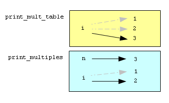

Как вы, наверное, уже заметили, многократное присваивание разных значений одной и той же переменной является совершенно обычным делом. Каждое новое присваивание связывает существующее имя переменной с новым значением (и отвязывает его от старого значения).
bruce = 5
print bruce,
bruce = 7
print bruce
Эта программа выводит 5 7, поскольку, когда переменная bruce выводится в первый раз, её значение равно 5, а когда во второй раз, переменная имеет значение 7. Запятая в конце первого предложения print подавляет перевод строки, вот почему оба числа выводятся на одной и той же строке.
Так выглядит многократное присваивание на диаграмме:
Еще раз обратите внимание, как важно различать операцию присваивания и операцию сравнения. Поскольку для операции присваивания Python использует знак равенства =, возникает соблазн прочитать предложение, подобное a = b, как утверждение о равенстве. Но это будет ошибкой!
Утверждение о равенстве симметрично, а предложение присваивания — нет. Например, в математике, если a = 7, то 7 = a. Это же справедливо для логических выражений Python: если a == 7, то и 7 == a. Но предложение присваивания a = 7 допустимо, а предложение 7 = a недопустимо.
В Python предложение присваивания может сделать две переменные равными, но они не обязаны оставаться равными всегда:
a = 5
b = a # a и b сейчас равны
a = 3 # a и b больше не равны
В третьей строке изменяется значение переменной a, но не изменяется значение переменной b, так что они больше не равны друг другу.
В некоторых языках программирования, чтобы избежать путаницы, для присваивания используется другой символ, например, <- или :=.
Часто новое значение, присваиваемое переменной, зависит от ее старого значения. Назовем такую форму повторного присваивания обновлением переменной:
x = x + 1
Это означает: взять текущее значение x, прибавить к нему один и присвоить полученное значение переменной x.
Если вы попытаетесь обновить несуществующую переменную, то получите ошибку, так как Python сначала вычисляет выражение справа от оператора присваивания, а затем присваивает полученное значение переменной слева:
>>> x = x + 1
Traceback (most recent call last):
File "", line 1, in
NameError: name 'x' is not defined
Прежде чем вы сможете обновить переменную, вы обязаны её инициализировать при помощи обычного присваивания:
>>> x = 0
>>> x = x + 1
>>>
Обновление переменной с прибавлением 1 к текущему значению называется инкрементом. Обновление с вычитанием 1 называется декрементом.
Часто компьютеры используются для автоматизации повторяющихся задач. Повторение одних и тех же (или почти одних и тех же) действий — это то, с чем компьютеры справляются отлично, а люди посредственно.
Повторное выполнение одних и тех же предложений программы называют циклическим или итеративным выполнением. Так как итеративное выполнение очень часто встречаются в программировании, Python предоставляет несколько способов для его организации. Первый, который мы рассмотрим, — это предложение while (англ.: пока).
Функция countdown (англ.: обратный отсчет) демонстрирует использование предложения while:
def countdown(n):
while n > 0:
print n
n = n-1
print "Go!"
Предложение while читается, как будто оно написано по-английски. Оно означает: пока n больше 0, продолжать выводить значение n и уменьшать n на 1. Когда значение n станет равным 0, будет выведено слово Go!.
Более формально поток выполнения предложения while выглядит так:
Тело предложения while состоит из предложений, следующих за заголовком и имеющих одинаковый отступ относительно заголовка.
Теперь понятно, почему этот тип выполнения называется циклическим. Ведь со второго шага управление передается обратно на первый, замыкая цикл. Обратите внимание, что если условие цикла окажется ложным при первой же проверке, то тело цикла не выполнится ни разу.
Для того, чтобы условие в конце концов стало ложным и циклическое выполнение закончилось, в теле цикла одна или несколько переменных должны изменяться. Иначе цикл будет выполняться всегда, и мы получим бесконечный цикл. Программистов очень веселит следующая инструкция по применению шампуня: Намылить, прополоскать, повторить. Ведь это же бесконечный цикл!
Однократное выполнение тела цикла называется итерацией.
В случае функции countdown можно доказать, что цикл завершится, поскольку известно, что значение n конечно, и мы видим, что оно становится меньше с каждой итерацией, так что в конце концов станет равным 0. В других случаях не все так просто:
def sequence(n):
while n != 1:
print n,
if n % 2 == 0: # n is even
n = n / 2
else: # n is odd
n = n * 3 + 1
Условие для этого цикла n != 1, поэтому цикл будет выполняться до тех пор, пока n не станет равным 1 (что сделает условие ложным).
В каждой итерации программа выводит значение n и затем проверят, является оно четным или нечетным. Если значение n четно, то оно делится на 2. Если нечетно, то делается равным n * 3 + 1. Например, если начальное значение (аргумент, переданный функции sequence) равно 3, то получим последовательность 3, 10, 5, 16, 8, 4, 2, 1.
Так как n иногда увеличивается, а иногда уменьшается, мы не видим очевидного доказательства того, что n когда-либо станет равным 1 и программа завершится. Для некоторых конкретных значений n можно доказать, что программа завершится. Например, если начальное значение есть степень двойки, то значение n будет четным в каждой итерации, пока не достигнет значения 1. Последовательность, приведенная в качестве примера выше, заканчивается именно такой последовательностью, начиная с 16.
Оставляя в стороне конкретные значения, представляет интерес вопрос о том, можно ли доказать, что программа завершится при любом значении n? До сих пор никому не удалось ни доказать это, ни опровергнуть!
Для того, чтобы писать эффективные компьютерные программы, разработчику необходимо выработать навык трассировки программ. Трассировка требует от программиста играть роль компьютера и следовать потоку выполнения программы, записывая состояние всех переменных и вывод, который производит программа, после каждой выполненной инструкции.
Чтобы понять этот процесс, давайте оттрассируем вызов sequence(3) из предыдущего раздела. В начале трассировки, у нас есть локальная переменная n (параметр) с начальным значением 3. Так как 3 не равно 1, выполняется тело цикла while. На экран выводится 3 и вычисляется выражение 3 % 2 == 0. Поскольку это выражение дает False, то выполняется ветка else, то есть, вычисляется 3 * 3 + 1 и результат присваивается n.
Чтобы во время трассировки программы вручную отслеживать происходящее, сделайте на листке бумаги по столбцу на каждую используемую переменную, и еще один — для вывода программы. К этому моменту мы имеем:
n output
-- ------
3 3
10
Так как выражение 10 != 1 дает True, то тело цикла выполняется вновь, и выводится 10. Выражение 10 % 2 == 0 истинно, поэтому выполняется ветка if и значение n становится равным 5. Оттрассировав программу до конца, мы получим:
n output
-- ------
3 3
10 10
5 5
16 16
8 8
4 4
2 2
1
Трассировка может быть слегка утомительным занятием, и чревата ошибками (вот почему люди научили компьютеры выполнять трассировку!), но это один из основных навыков программиста. Выполнив трассировку, можно многое узнать о том, как работает программа. Можно заметить, например, что, как только n получает значение степени двойки, программе требуется log2(n) итераций для завершения. Мы также видим, что конечная 1 не выводится.
Вы, конечно, знаете разницу между числами и цифрами? Цифры — это символы, с помощью которых записывают числа (аналогично тому, как с помощью букв записывают слова). Так, при помощи десяти цифр 0, 1, 2, 3, 4, 5, 6, 7, 8 и 9 можно записать любое целое положительное число в десятичном представлении.
Следующая функция подсчитывает количество цифр в десятичном представлении числа, переданного ей в качестве параметра:
def num_digits(n):
count = 0
while n:
count = count + 1
n = n / 10
return count
Вызов num_digits(710) вернет 3. Оттрассируйте выполнение этой функции для того, чтобы детально разобраться, как именно она работает.
Эта функция демонстрирует прием программирования, который называется счетчик. Переменная count (англ.: счетчик) инициализируется нулем и затем инкрементируется каждый раз, когда выполняется тело цикла. Когда цикл завершается, count содержит число, показывающее, сколько раз выполнилось тело цикла. Это и будет искомое количество цифр в десятичном представлении n.
Если бы мы хотели подсчитать только количество нулей или пятерок, то решили бы эту задачу, сделав увеличение счетчика условным:
def num_zero_and_five_digits(n):
count = 0
while n:
digit = n % 10
if digit == 0 or digit == 5:
count = count + 1
n = n / 10
return count
Убедитесь, что num_zero_and_five_digits(1055030250) возвращает 7.
Инкрементирование переменной так часто встречается, что Python предлагает для подобных случаев краткую форму записи:
>>> count = 0
>>> count += 1
>>> count
1
>>> count += 1
>>> count
2
>>>
Предложение count += 1 есть краткая форма предложения count = count + 1 . Значение инкремента не обязано быть равным 1:
>>> n = 2
>>> n += 5
>>> n
7
>>>
Также существуют следующие символы, комбинирующие выполнение арифметической операции и присваивание: -=, *=, /= и %=. Следующий пример демонстрирует их использование:
>>> n = 2
>>> n *= 5
>>> n
10
>>> n -= 4
>>> n
6
>>> n /= 2
>>> n
3
>>> n %= 2
>>> n
1
Циклы хорошо подходят для такой работы, как порождение табличных данных. До того, как компьютеры стали общедоступны, людям приходилось вручную расчитывать логарифмы, синусы и косинусы, а также другие математические функции. Для облегчения расчетов математические справочники содержали длинные таблицы со значениями этих функций. Создание этих таблиц было медленным и утомительным, и в них порой закрадывались ошибки.
Когда на сцене появились компьютеры, одной из первых реакций на это было: “Здорово! Мы сможем генерировать таблицы с помощью компьютеров, так что в них не будет ошибок!” Реакция, по сути, правильная, но недальновидная. Вскоре компьютеры и калькуляторы так распространились, что таблицы вышли из употребления.
Ну, почти вышли. При выполнении некоторых операций компьютеры используют таблицы значений, чтобы получить приблизительный результат, а затем уточняют его при помощи дальнейших вычислений. Бывали случаи, когда во внутренних таблицах встречались ошибки, наиболее известная из них — ошибка в таблице процессора Intel Pentium для выполнения деления чисел с плавающей точкой.
Хотя таблица логарифмов сегодня не так полезна, как была когда-то, она представляет собой отличный пример использования итераций. Следующая программа выводит последовательность значений в левом столбце и соответствующих степеней двойки в правом:
x = 1
while x < 13:
print x, '\t', 2**x
x += 1
Строка '\t' задает символ табуляции. Обратная косая в '\t' показывает начало управляющей последовательности. Управляющие последовательности используются для задания невидимых символов, например, таких, как табуляция и перевод строки. Последовательность '\n' задает перевод строки.
Управляющая последовательность может появляться в любом месте строки; в нашем примере, управляющая последовательность '\t' — это все, что есть в строке. Как вы думаете, как можно задать обратную косую в строке?
По мере того, как на экране отображаются символы и строки, невидимый указатель, называемый курсор, указывает место, где будет отображен следующий символ. После выполнения предложения print курсор обычно оказывается в начале следующей строки.
Символ табуляции перемещает курсор на следующую позицию табуляции. Табуляция полезна для выравнивания столбцов текста, как, например, в выводе нашей программы:
1 2
2 4
3 8
4 16
5 32
6 64
7 128
8 256
9 512
10 1024
11 2048
12 4096
Благодаря символам табуляции между столбцами, позиция, в которой начинается второй столбец, не зависит от количества цифр в первом столбце.
Двумерные таблицы — это таблицы, в которых интересующее вас значение находится на пересечении строки и столбца. Хорошим примером является таблица умножения. Скажем, вы хотите напечатать таблицу умножения для значений от 1 до 6.
Для начала, напишем цикл, который печатает числа, кратные 2, на одной строке:
i = 1
while i <= 6:
print 2 * i, ' ',
i += 1
print
В первой строке инициализируется переменная i, которая выполняет роль счетчика или переменной цикла. По мере того, как цикл выполняется, значение i увеличивается от 1 до 6. Когда i становится равным 7, цикл завершается. В каждой итерации отображается значение 2*i и три пробела.
Помните, что запятая в конце предложения print подавляет перевод строки? После того, как цикл завершается, второе предложение print начинает новую строку.
Программа выводит следующее:
2 4 6 8 10 12
Пока все замечательно. Следующим шагом будет инкапсуляция и обобщение.
Оформив полезный фрагмент кода как функцию, мы можем использовать этот код многократно, вызывая функцию там, где это необходимо. Мы уже дважды заворачивали наш код в функции : print_parity в главе 4 и is_divisible в главе 5. Часто, создавая новую функцию, программисты используют обобщение.
Обобщение означает взять что-нибудь конкретное, например, вывод на печать чисел, кратных 2, и сделать из этого что-то более общее, например, печать чисел, кратных любому целому числу.
Следующая функция использует рассмотренный выше цикл, обобщенный для вывода чисел, кратных n:
def print_multiples(n):
i = 1
while i <= 6:
print n * i, '\t',
i += 1
print
Все, что нам понадобилось для превращения кода в функцию — это добавить первую строку, которая объявляет имя функции и список параметров. Все, что понадобилось для обобщения, — заменить значение 2 на параметр n.
Если вызвать эту функцию с аргументом 2, то получим тот же вывод, что и раньше. С аргументом 3 вывод будет таким:
3 6 9 12 15 18
С аргументом 4 — таким:
4 8 12 16 20 24
Вы уже, наверное, догадались, как напечатать таблицу умножения — многократно вызывая print_multiples с разными аргументами. Можно воспользоваться еще одним циклом:
i = 1
while i <= 6:
print_multiples(i)
i += 1
Заметьте, как похож этот цикл на первый, в теле функции print_multiples. Все, что мы сделали — это заменили предложение print на вызов функции.
Эта программа выводит таблицу умножения:
1 2 3 4 5 6
2 4 6 8 10 12
3 6 9 12 15 18
4 8 12 16 20 24
5 10 15 20 25 30
6 12 18 24 30 36
Возьмем код из предыдущего раздела и завернем его в функцию:
def print_mult_table():
i = 1
while i <= 6:
print_multiples(i)
i += 1
Это довольно распространенный подход к разработке. Вначале пишем код, создавая строки кода вне функции или набирая их в интерактивном режиме интерпретатора. Когда код заработает, заворачиваем его в функцию.
Этот подход особенно полезен, если в начале работы над программой вы не уверены, как наилучшим образом разделить программу на функции. Он позволяет определять и улучшать структуру программы по мере того, как вы продвигаетесь вперед.
Возможно, вас удивляет, что мы используем переменную i и в print_multiples и в print_mult_table. Не возникнут ли проблемы, когда одна из этих функций изменит значение переменной?
Ответ: нет, потому что i в print_multiples и i в print_mult_table — не одна и та же переменная.
Переменные, созданные внутри определения функции, являются локальными. Нельзя получить доступ к такой переменной вне функции, в которой она определена. Это означает, что в программе может быть множество переменных с одним и тем же именем при условии, что они не находятся внутри одной и той же функции.
Стековая диаграмма для этой программы показывает, что две переменные с именем i — не одна и та же переменная. Они могут быть связаны с разными значениями, и изменение одной из них не влияет на другую.
Значение переменной i в print_mult_table изменяется от 1 до 6. На диаграмме она имеет значение 3. В следующей итерации ее значением будет 4. Каждый раз при выполнении тела цикла print_mult_table вызывает print_multiples с текущим значением i в качестве аргумента. Это значение присваивается параметру n.
Внутри print_multiples значение i изменяется от 1 до 6. На диаграмме значение этой переменной равно 2. Изменение этой переменной не оказывает никакого влияния на значение переменной i в print_mult_table.
Различные локальные переменные с одним и тем же именем часто встречаются, и в этом нет ничего необычного. В частности, такие имена как i или j часто используются как переменные цикла.
Как другой пример обобщения, представьте, что вам нужна программа, которая бы печатала таблицу умножения любого размера, а не только 6 на 6. Можно добавить параметр к print_mult_table:
def print_mult_table(high):
i = 1
while i <= high:
print_multiples(i)
i += 1
Мы заменили значение 6 параметром high. Если теперь вызвать print_mult_table с аргументом 7, вывод программы будет таким:
1 2 3 4 5 6
2 4 6 8 10 12
3 6 9 12 15 18
4 8 12 16 20 24
5 10 15 20 25 30
6 12 18 24 30 36
7 14 21 28 35 42
Замечательно, вот только хотелось бы, чтобы таблица была квадратной — с одинаковым числом строк и столбцов. Чтобы этого добиться, добавим еще один параметр к print_multiples, задающий количество столбцов.
Нарочно назовем этот параметр high, демонстрируя, что разные функции могут иметь параметры с одинаковыми именами (так же, как они могут иметь одноименные локальные переменные). Вот программа целиком:
def print_multiples(n, high):
i = 1
while i <= high:
print n*i, '\t',
i += 1
print
def print_mult_table(high):
i = 1
while i <= high:
print_multiples(i, high)
i += 1
Обратите внимание, что, когда мы добавили новый параметр, нам пришлось изменить первую строку функции (заголовок функции) и вызов функции в print_mult_table.
Теперь программа выводит квадратную таблицу 7 на 7:
1 2 3 4 5 6 7
2 4 6 8 10 12 14
3 6 9 12 15 18 21
4 8 12 16 20 24 28
5 10 15 20 25 30 35
6 12 18 24 30 36 42
7 14 21 28 35 42 49
Правильно выполненное обобщение функции часто открывает возможности, которые не планировались с самого начала. Например, как вы наверняка заметили, поскольку ab = ba, все произведения в таблице появляются дважды. Можно сэкономить чернила, печатая только половину таблицы. Для этого достаточно изменить одну строку функции print_mult_table. Изменим
print_multiples(i, high)
на
print_multiples(i, i)
и получим:
1
2 4
3 6 9
4 8 12 16
5 10 15 20 25
6 12 18 24 30 36
7 14 21 28 35 42 49
Мы уже пару раз упоминали о преимуществах, которые дает использование функций. Вот некоторые из этих преимуществ:
Циклы часто используются в программах, выполняющих численные расчеты, когда вначале берется приблизительный ответ, а затем это приближение итеративно улучшается.
Например, один из способов вычисления квадратных корней — метод Ньютона. Предположим, вы хотите получить квадратный корень из n. Если начать с какого угодно приближения, то можно посчитать лучшее приближение по следующей формуле:
better = (approx + n/approx)/2
Напишем функцию для вычисления квадратного корня, многократно применяя эту формулу до тех пор, пока улучшенное приближение не окажется равным предыдущему:
def sqrt(n):
approx = n/2.0
better = (approx + n/approx)/2.0
while better != approx:
approx = better
better = (approx + n/approx)/2.0
return approx
Попробуйте вызвать эту функцию с аргументом 25 и убедитесь, что она возвращает 5.0.
Метод Ньютона является примером алгоритма: это формальный процесс решения некоторого класса задач (в данном случае, вычисление квадратных корней).
Разработать алгоритм непросто. Иногда проще начать с чего-то, что не является алгоритмом. Когда вы учились умножать однозначные числа, вы, вероятно, запомнили таблицу умножения. По сути, вы запомнили 100 конкретных результатов. Такой тип знания не является алгоритмическим.
Но если вам было немного лень, вы жульничали, научившись нескольким хитростям. Например, чтобы найти произведение n и 9, можно записать n - 1 в качестве первой цифры и 10 - n в качестве второй цифры. Этот трюк — общее решение для умножения любого однозначного числа на 9. Это алгоритм!
Аналогично, приемы, которые вы изучили для сложения с переносом, вычитания с заемом и деления многозначных чисел — все это алгоритмы. Характерной чертой алгоритмов является то, что для их выполнения не нужен интеллект. Это чисто механические процессы, в которых следующий шаг вытекает из предыдущего согласно простому набору правил.
Не странно ли, что люди тратят так много времени в школе на то, чтобы научиться выполнять алгоритмы? Ведь это совершенно не требует ума.
В отличие от применения алгоритмов, их разработка — интересный, интеллектуально насыщенный процесс, и неотъемлемая часть программирования.
Многие действия, которые люди выполняют естественно, без труда или сознательного обдумывания, очень сложно выразить в виде алгоритмов. К таким действиям относится, например, понимание естественного языка. Все мы делаем это, но до сих пор никто не смог в форме алгоритма объяснить, как мы это делаем.
Напишите однострочное предложение, которое выводит:
produces
this
output.
Добавьте предложение print к функции sqrt из раздела 6.14, которое выводит better в каждой итерации. Вызовите измененную функцию с аргументом 25 и рассмотрите результат выполнения.
Оттрассируйте выполнение последней версии print_mult_table и разберитесь, как она работает.
Напишите функцию print_triangular_numbers(n), которая выводит первые n треугольных чисел. Вызов print_triangular_numbers(5) должен вывести следующее:
1 1
2 3
3 6
4 10
5 15
Подсказка: воспользуйтесь поиском в интернет чтобы выяснить, что такое треугольные числа.
Откройте файл с именем ch06.py и добавьте следующее:
if __name__ == '__main__':
import doctest
doctest.testmod()
Напишите функцию is_prime которая принимает один целочисленный аргумент и возвращает True, если аргумент является простым числом, и False в противном случае. Начните работу с написания доктестов для этой функции.
Что вернет num_digits(0)? Измените функцию так, чтобы она возвращала 1 для этого случая. Почему вызов num_digits(-24) приводит к бесконечному циклу? Измените num_digits так, чтобы она работала корректно с любым целым числом.
def num_digits(n):
"""
>>> num_digits(12345)
5
>>> num_digits(0)
1
>>> num_digits(-12345)
5
"""
Допишите тело функции num_digits и убедитесь, что все доктесты успешно проходят.
Добавьте следующее в файл ch06.py:
def num_even_digits(n):
"""
>>> num_even_digits(123456)
3
>>> num_even_digits(2468)
4
>>> num_even_digits(1357)
0
>>> num_even_digits(2)
1
>>> num_even_digits(20)
2
"""
Напишите тело функции num_even_digits (англ.: число четных цифр) так, чтобы она работала корректно.
Добавьте следующее в файл ch06.py:
def print_digits(n):
"""
>>> print_digits(13789)
9 8 7 3 1
>>> print_digits(39874613)
3 1 6 4 7 8 9 3
>>> print_digits(213141)
1 4 1 3 1 2
"""
Напишите тело функции print_digits так, чтобы все доктесты успешно прошли.
Напишите функцию sum_of_squares_of_digits, которая вычисляет сумму квадратов цифр целого числа, переданного в качестве аргумента. Например, sum_of_squares_of_digits(987) должно дать 194, так как 9**2 + 8**2 + 7**2 == 81 + 64 + 49 == 194.
def sum_of_squares_of_digits(n):
"""
>>> sum_of_squares_of_digits(1)
1
>>> sum_of_squares_of_digits(9)
81
>>> sum_of_squares_of_digits(11)
2
>>> sum_of_squares_of_digits(121)
6
>>> sum_of_squares_of_digits(987)
194
"""
Проверьте ваше решение с помощью приведенных доктестов.